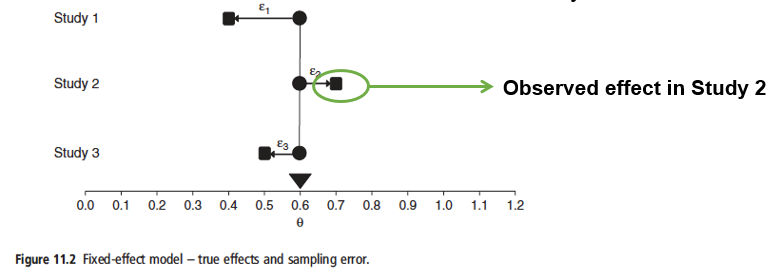
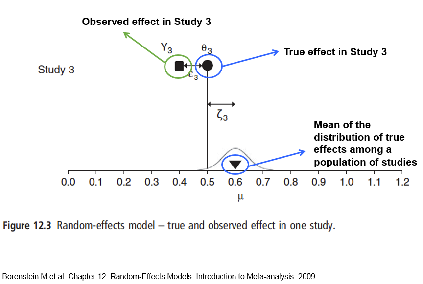

Introduction
In the previous website we explored how to calculate effect sizes using R as a ‘hand-calculator’, and then undertake a simple fixed-effect meta-analysis using R with Hedges’ g as our measure of the standardised mean difference between two treatments. The disadvantage of this approach is that it is very time-consuming. Fortunately, the metafor package automates many of the steps, making the process much easier. Here we will go through fixed- and random-effects meta-analysis with continuous data, and display the results in forest plots. We will also consider binary (count) and correlation data.
Revision: Fixed-effects
Recall that these data can be analysed by either fixed- or random-effects meta-analysis, and the approach and philosophy differs slightly. The following diagram summarises a fixed-effect model

In the above diagram our effect size is represented by \(\theta\) (Greek letter theta), with our true overall effect across all studies the triangle at the bottom. The basic assumption of a fixed-effect model is that every study would have this same true effect, as shown by the circles lined up vertically.
Since all the studies have the same true effect, any variation that they report must be due to random error inherent in each study. If you had infinite sample sizes, they would all report the same true effect; they would be showing the population-based effect size. See populations and samples. This is summarised below:

Of course, in reality the sample size in each study is not infinite, so you get sampling variation. In the diagram below the true effect for each study (circles) is still the same, but the observed effect (squares) now varies:

So we can say the observed effect \(Y\) for study \(i\) is:
\[Y_i=\theta+\epsilon_i\]
At first sight, these errors shown as \(\epsilon_1, \epsilon_2, \epsilon_3\) (Greek letter epsilon) for the three studies is problemmatic. However, we can estimate the sampling distribution around these errors, placing a normal (Gaussian or ‘bell-shaped’) curve around each error, based on the reported variance in the study.

Study 1 has a relatively small sample size, with large variance, so the observed effect could have fallen roughly between 0.20 and 1.00. In contrast, Study 3 has a large sample size, with small variance, and so the observed effect is roughly between 0.40 to 0.80. A normal curve is based on the square root of the variance.
Fixed-effect meta-analysis; continuous data
Example dataset
We will use the same example that you worked on earlier, from Borenstein page 88, where you have the means, standard deviations, and numbers of replicates for two treatments (1 and 2):
| Study | T_mean | T_SD | T_n | C_mean | C_SD | C_n |
|---|---|---|---|---|---|---|
| Carroll | 94 | 22 | 60 | 92 | 20 | 60 |
| Grant | 98 | 21 | 65 | 92 | 22 | 65 |
| Peck | 98 | 28 | 40 | 88 | 26 | 40 |
| Donat | 94 | 19 | 200 | 82 | 17 | 200 |
| Stewart | 98 | 21 | 50 | 88 | 22 | 45 |
| Young | 96 | 21 | 85 | 92 | 22 | 85 |
Fixed-effect analysis of continuous data
The escalc() function can be used to calculate our effect sizes based on this continuous dataset. It can take numerous different, and different numbers of, “arguments” depending on what you are wanting to do and the data available. Here we are giving it:
measure. This is the effect size to calculate. “SMD” represents standardised mean differences as calculated to Hedges’ gm1i,m2i. The means for the two treatmentssd1i,sd2i. The standard deviationsn1i,n2i. The number of replicatesdata. The name of the data.frame; each row is a separate study.
In the code-block below, your data are called continuous_dat
continuous_eff <- escalc(measure="SMD", m1i=T_mean, sd1i=T_SD, n1i=T_n,
m2i=C_mean, sd2i=C_SD, n2i=C_n, data=continuous_dat)
summary(continuous_eff)In the output summary, you the column headed yi contains the Hedges’ g standardised effect sizes, and the column vi their within-variance. Compare these values with those you manually calcaluated before; they are the same, but you can see that it is much simpler via metafor. Also output are standard errors, z test statistics and the lower and upper 95% confidence intervals. Now you can complete the meta-analysis via the rma command. Here we provide it with four arguments:
yiThe effect size. We are using Hedges’ g here, but thermafunction always assumes thatyiis your effect size.viWithin-study variancedataThe dataframe with the effect sizes and variances. There is nothing wrong if in theescalccall you decide to “overwrite” your original dataframe; it will keep all the existing columns, and add the new ones to it.method. By defaultrmadoesnot do fixed-effects models, so we have to specify it here.
continuous_eff <- escalc(measure="SMD", m1i=T_mean, sd1i=T_SD, n1i=T_n,
m2i=C_mean, sd2i=C_SD, n2i=C_n, data=continuous_dat)continuous_fixed_rma <- rma(yi, vi, data=continuous_eff, method="FE")
summary(continuous_fixed_rma)This shows the standardised mean difference (Hedges g) of 0.4150021 under the estimate heading, the same as the value of M that you manually calculated before. It also shows the standard error, the z-statistic, p-value and 95% CI. Here the meta-analysis is indicating a significant difference between the treatment and control for the reported standardised effect size.
Finally, you can summarise all these results via a ‘forest plot’; we will use the showweights option to display them:
continuous_eff <- escalc(measure="SMD", m1i=T_mean, sd1i=T_SD, n1i=T_n,
m2i=C_mean, sd2i=C_SD, n2i=C_n, data=continuous_dat)
continuous_fixed_rma <- rma(yi, vi, data=continuous_eff, method="FE")forest(continuous_fixed_rma, showweights = TRUE)The standard output shows the effect size at the end, and the 95% CI for each study as well as for the overall fixed-effects (FE) model. By default, the forest plot merely lists the studies as ‘Study 1’, ‘Study 2’ etc., but later you will learn R commands to improve the plots.
Revision: Random-effects
One problem with the fixed-effect method is that it assumes that all the studies are identical, and that the real effect size is the same in all the studies. Of course in reality this is unlikely to be true. The underlying effect sizes are likely to differ. So our underlying true effects will differ for each study, forming a bell-shaped curve around our overall true effect across all studies:

In the above diagram \(\mu\) (Greek letter mu) effect size, and the triangle represents the overall true effect across all studies. The actual true effect at three studies within this bell-shaped curve are represented by circles.
For example, survival of an endangered mammal population as a result of a management intervention may partly depend on the age of the mammals in the different populations in each of the different studies, as well as the actual management intervention. The diagram below shows the true effect sizes (0.55, 0.65 and 0.50) in three studies, assuming no observation error whatsoever, \(\delta_1\), \(\delta_2\) and \(\delta_3\). The curve represents the normal distribution around all true effects.

Of course in reality, there is observation error, so for our third study there is both the sampling error, shown as \(\epsilon_3\) below which is the difference of what was observed, \(Y_3\) and the true effect size \(\delta_3\) in that study. The study effect size differs from the overall effect size for all studies by \(\zeta_3\) as shown below:

So, we can say that the observed effect \(Y_i\) for any study is given by the grand mean \(\mu\) (Greek letter mu), the deviation of the study’s true effect from the grand mean \(\zeta_i\) (Greek letter zeta), and the sampling error in that study \(\epsilon_i\) (Greek letter epsilon):
\[Y_i = \mu + \zeta_i + \epsilon_i\] This equation covers both within-study variation \(\epsilon_i\) and between-study variation \(\zeta_i\). Hopefully you can see that random-effects models are generally preferred over fixed-effects models in meta-analysis as they give a more realistic reflection of the processes actually taking place.
Random-effect meta-analysis; continuous data
The metafor package defaults to random models when possible, as they are usually more robust for the reasons explained above. Repeating our analysis as before. There is no difference in the calculation of the effect sizes, so we can use the ones from earlier:
continuous_eff <- escalc(measure="SMD", m1i=T_mean, sd1i=T_SD, n1i=T_n,
m2i=C_mean, sd2i=C_SD, n2i=C_n, data=continuous_dat)continuous_random_rma <- rma(yi, vi, data=continuous_eff)
summary(continuous_random_rma)Notice that our estimate of the standardised effect size, 0.3606525 is smaller than that obtained via the fixed-effect model of 0.4150021, but is still significant. Again we can produce a forest plot to summarise your findings:
continuous_eff <- escalc(measure="SMD", m1i=T_mean, sd1i=T_SD, n1i=T_n,
m2i=C_mean, sd2i=C_SD, n2i=C_n, data=continuous_dat)
continuous_random_rma <- rma(yi, vi, data=continuous_eff)forest(continuous_random_rma, showweights = TRUE)